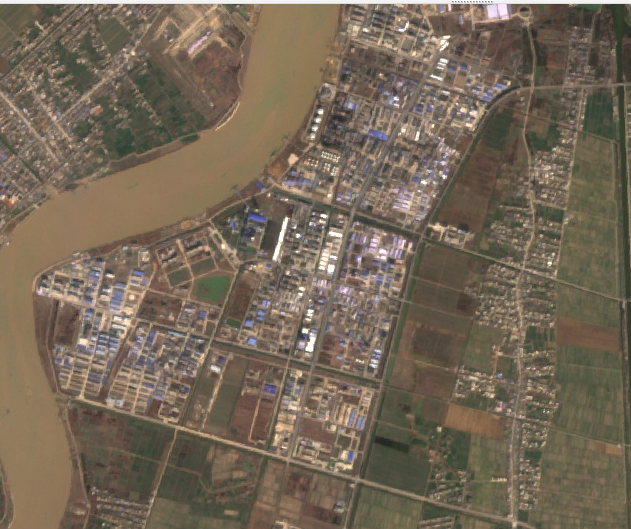
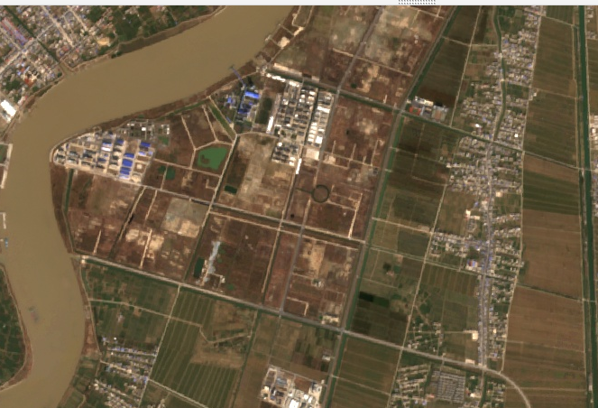
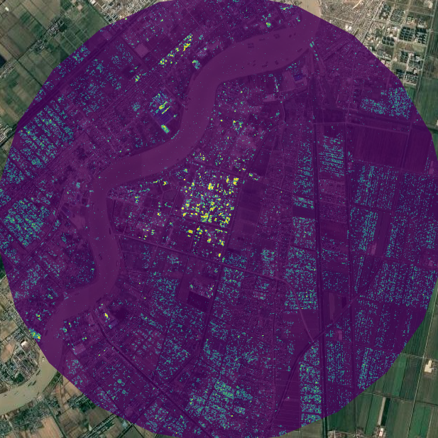
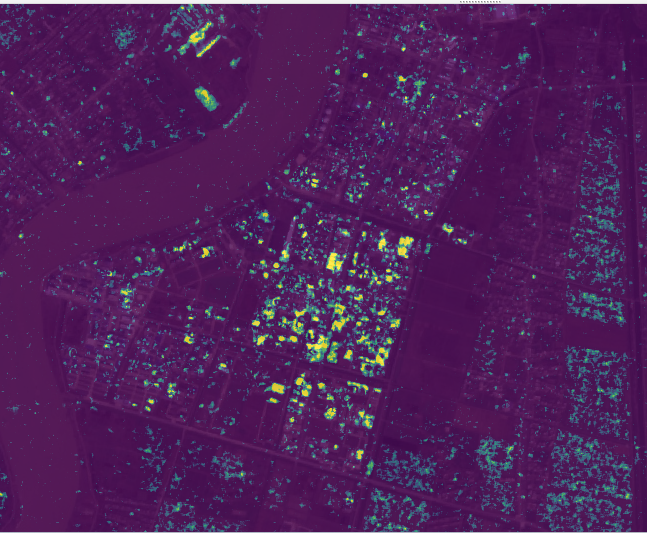

Week 9 Synthetic Aperture Radar
This week we covered the Synthetic Aperture Radar (SAR) and application of SAR data. SAR employs radar to create images of the Earth’s surface which makes it an active sensor.
Introduction to SAR
SAR is a powerful remote sensing method for gathering high-resolution images of the Earth’s surface. With its active nature, the SAR can penetrate the could and weather conditions yielding highly accurate surface texture data. SAR measures the backscatter of the EM waves it emitted.
SAR Fundamentals
Understanding the signatures of SAR’s complex nature, along with speckle noise and polarisation is crucial for accurate interpretation. SAR emits shorer wavelength (i.e. higher frequency waves) on the microwave band, which could yield high-resolution results, allowing us to extract finer details.
The aperture size on SAR is a concept from its optical systems, where a synthetic aperture is created by the movement of the sensor in orbit. Longer aperture effectively translates to finer resolution in the processed images. For SAR, it inherently has a speckle noise which can cause constructive and destructive interference when the reflected signals recombine. Fortunately, we can perform filtering or multi-looking which combines multiple images from different sensors, to mitigate the negative effects. SAR can have different types of polarisation such as horizontal (H), vertical (V) or both (HH, HV, VH, VV) caused by its position in space and the electric field. Polarisation offers valuable additional information about the scene features such as dielectric properties of the material which is useful in distinguishing vegetation types.
| SAR/InSAR | Optical | |
|---|---|---|
| Condition of Operation | All weather all time | Enough light (Day time only) and clear sky |
| Surface Deformation Capacities | Accurate and sufficient measures over time | Limited |
| Data Interpretation Complexity | High, requires sophisticated processing | Low, easier to process |
| Noise | Speckle noise, can be tricky | If cloudy or other bad weather condition, data is much less usable |
| Resolution | High if processed well and little interference from other radars | Sensor dependent, certain sensors have high resolution |
| Cost / Accessibility | Expensive and data can be difficult to acquire | Low cost and ample open-source datasets |
Getting the SAR data collection in GEE: (please wait for a bit longer as there are some errors due to outdated dependencies, but other parts of the dataset are still visible, all credits goes to ktmagar’s YT )
InSAR and SAR
Interferometric SAR extends SAR’s capacities by performing cross-references on different phases between two or more SAR images taken at different times from locations that are close to each other. This methods enables the measurement of surface deformations, providing insights for surface changes caused by events such as earthquakes, land slides, subsidence. In comparison to SAR, InSAR emphasises more on the slight changes at temporal level.
Practical: Running SAR for Blast Damage Analysis
Using Ollie’s code for Blast Damage Assessment, I was able to assess the 2019 Xiangshui Chemical Plant Explosion which happened in Jiangsu Province, China.




There is no open-building-footprint datasets that is freely available via GEE, I will be searching for available data to perform more detailed reports later on.
The results are published in a GEE App, with layer of 2018 and 2022 Sentinel Images of the explosion site.
SAR and Its Application in Research
Utilising the sensitivity of SAR to structures, a group of researchers discovered that CNN can be employed on SAR images to capture the newly built construction. (Jaturapitpornchai et al. 2019) However, this work is limited by the size of the labelled dataset and the accuracy of CNN. Lattari, Rucci, and Matteucci (2022) proposed a novel model based on the combination of LSTM (Long Short-Term Memory) and Time-Gated LSTM (TGLSTM) for InSAR image series. They have also synthesised data to compensate for the lack of ground truth InSAR images. To measure the model’s performance, the authoers combined quantitative metrics such as precision, recall and F1 scores with a qualitative assessment of an actual project in the Tuscany region. The model was proven to outperform previous models, however the dependence on data simulation, limited computation resources, and assumption of linear change rather than taking seasonality and non-linear trends into consideration, may limit the generalisability and applicability of their new models.
Another group of researchers utilised InSAR’s capacity further to predict deformation. (Ma, Zhang, and Lin 2020) Their DCNN (Deep Convolutional Neural Network) model, which is trained to capture different types of deformations in the building, can offer insights into intricate non-linear thermal deformation in the future. However, their focus on the Hong Kong Airport may limit the generalisability of the model.
In terms of Self-Supervised Learning with SAR for urban researches, one of the common use case is to enhance CNN reliability, perform robust data fusion, (Chen and Bruzzone 2021b) and de-noising (Tan et al. 2021), in a limited labelled dataset context. Aside from the methodological aspect, researchers also optimsed urban change detection (Chen and Bruzzone 2021a) with the SSL for SAR data. Peng et al. (2020) used SSL framework to produce near-real-time patch-wise urban flood mapswith multi-spectral satellite combined with SAR images. Their model demonstrated satisfying generalisability and strong performance. With more work to address the current low computational efficiency, SSL frameworks for near or real-time urban flood monitoring would be feasible.
Reflection
The introduction of SAR and advanced techniques with it, has broadened my horizon for remote sensing, further enhanced my understanding of the application of RS data in a temporal aspect. Data fusion for SAR and InSAR is also promising realm of research in terms of optimising the available data. To tackle the challenge of limited quality data, I also delved further into the incorporating SSL with remote sensing, particularly, in an urban context with SAR data. This reminded me that introducing other machine learning paradigms could optimise the usage of data while improving model performance.
To reflect on the data integrity of SAR, I appreciate the complex approach of the sensors determined that factors like speckle noise and radar backscatter variations, which demand specialised process to properly treat the data. I do believe future research of more accuracy and high-performing models to extract the information from SAR, and data fusion with other sources are still pillars to better utilising SAR data. Overall, despite the limitations, ongoing urban research and innovation that uses SAR and InSAR, are indicative of a bright future. Such efforts singfinifies the continuous and profound comprehension of SAR and InSAR applications, extending meaningful beyond the academia, which could ultimately lead to a future of more sustainable and resilient urban environment.